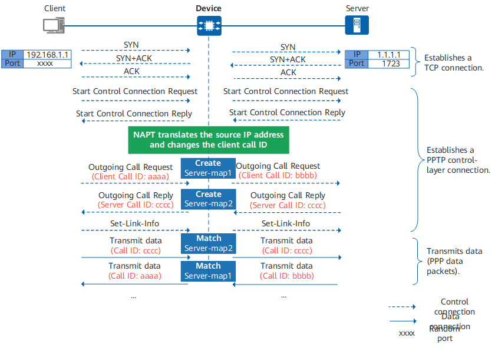

The Point-to-Point Tunneling Protocol (PPTP) is a new enhanced security protocol developed based on the PPP protocol. It is a method for implementing Virtual Private Networks (VPNs).
PPTP is a multi-channel protocol. It uses TCP to create control channels to send control commands, and uses GRE to encapsulate data packets that will be transmitted in data channels.
PPTP adopts the client/server mode. The PPTP client establishes a TCP connection with the PPTP server, and then establishes a PPTP control-layer connection on the TCP connection. Then, the PPP data packets are encapsulated through GRE and then transmitted in the tunnel. Figure 1 shows the key interaction process between the client and the server in the PPTP ALG scenario.
In the NAT scenario where the source IP address and source port are both translated, the communication between the client and the server may be abnormal. PPTP uses GRE to encapsulate data packets, but the GRE header does not contain port information. Common NAT can only identify and translate the source IP address of the client. When multiple clients on the intranet interact with the same server, the Device receiving a response packet from the server cannot determine to which client the response packet is sent based on only the destination public IP address. As a result, the Device discards the packet.
In addition, PPTP differentiates tunnels based on the source IP address and call ID in the GRE header. Because clients do not negotiate with each other, they may carry the same call ID. After the source IP address is translated using NAT, different clients correspond to the same public network address and call ID. As a result, tunnels fail to be established.
Therefore, in the NAT scenario where the source IP address and source port are both translated, you need to enable PPTP ALG on the Device to translate the source IP address and convert the call ID, and create an invisible channel (server map) for subsequent data transmission. If this invisible channel is not available, data packets will be blocked under the control of a refined security policy (only packets from the client to port 1723 of the server are allowed to pass through).

The client and the server establish a TCP connection through three-way handshake. A control connection session is generated on the Device. The IP address of the client is translated from 192.168.1.1 to 1.1.1.2 through source NAT, and the port is translated from xxxx to yyyy.
The client and the server continue to establish a PPTP control-layer connection based on the TCP connection. The packets matching the control connection session are permitted.
The client carries the local call ID in the Outgoing Call Request packet. The source IP address and call ID of the packet are changed on the Device and then sent to the server. Server map 1 is also created on the Device.
<sysname> display firewall server-map aspf Type: ASPF, 1.1.1.1 -> 1.1.1.2:bbbb[192.168.1.1:aaaa], Zone: --- Protocol: tcp(Appro: pptp-gre), Left-Time: 00:03:09 VPN: public -> public
According to the server map, the IP address of the client is changed from 192.168.1.1 to 1.1.1.2, and the call ID of the client is changed from aaaa to bbbb.
The server carries the local call ID in the Outgoing Call Reply packet. The destination IP address of the packet is translated on the Device and then sent to the client. Server map 2 is also created on the Device. The call ID of the server is equivalent to the destination port. In the source NAT scenario, the destination port does not need to be translated. Therefore, the Device does not change the call ID of the server.
<sysname> display firewall server-map aspf Type: ASPF, 192.168.1.1[1.1.1.2] -> 1.1.1.1:cccc, Zone: --- Protocol: tcp(Appro: pptp-gre), Left-Time: 00:03:09 VPN: public -> public
According to the server map, the call ID of the server is cccc.
The client and the server transmit data through tunnels. Two tunnels are generated for each pair of client and server to exchange data packets. One tunnel is used for communication from the client to the server, and the other is used for communication from the server to the client.
When a packet from the client to the server reaches the Device, server map 2 is matched and the Device translates the source address to the public address 1.1.1.2, permits the packet, and creates a session. The packet is no longer controlled by a security policy.
Similarly, when a packet from the server to the client reaches the Device, server map 1 is matched and the Device translates the destination address to the client's actual IP address 192.168.1.1 and changes the call ID to the actual call ID. Then, the Device permits the packet and creates a session. The packet is no longer controlled by a security policy.